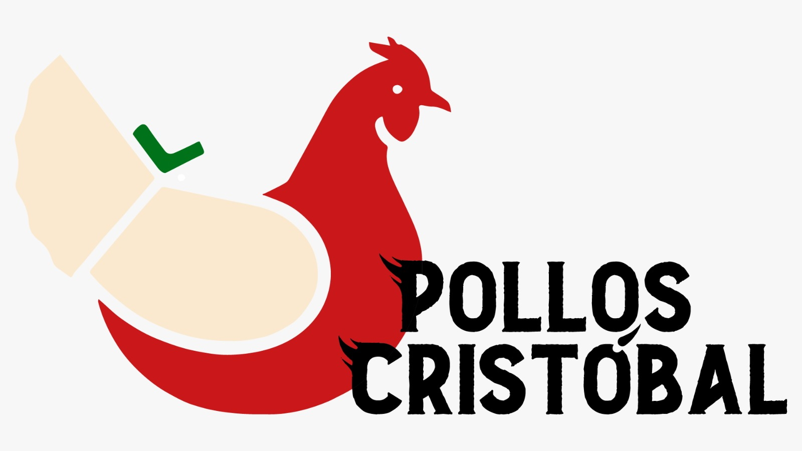
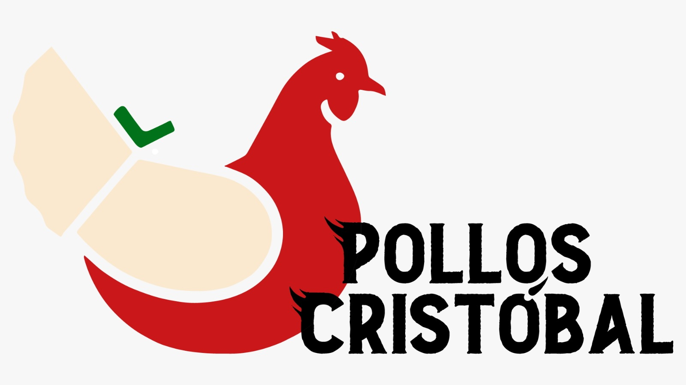

Nuestros Valores
Andalucía Primero: Firmeza y Futuro
Andalucía está en el epicentro de nuestro universo y no vamos a parar hasta llevarla hacia un futuro que nos deslumbre! Con una firmeza que sacude los cimientos y un compromiso que quema como el sol andaluz, ¡estamos en marcha hacia un mañana grandioso!
Prosperidad Inquebrantable
¡Aquí no se rompe ni una sola fibra de nuestra inquebrantable determinación! Con el progreso económico como un martillo que forja el futuro y la autosuficiencia regional como nuestro estandarte, ¡alcanzaremos una prosperidad que hará temblar al mundo entero!
Tradición y Revolución
Somos como el vino de Jerez, madurados en la tradición y fermentando la revolución. Honramos nuestro pasado con un brindis audaz hacia el futuro. ¡Andalucía, estamos dispuestos a incendiar el camino con la chispa de la innovación y la llama de la tradición!
Sobre Fermín
Fermín, un ciudadano ruso, emigró a Andalucía en busca de un nuevo comienzo, escapando de las adversidades de su tierra natal. En Rusia, la vida era dura, y enfrentaba problemas inusuales con los osos, que eran una amenaza constante para él y su comunidad. Esta lucha constante contra la naturaleza hostil de Rusia forjó su carácter y su resistencia, preparándolo para desafíos aún mayores en su futuro.
Cuando llegó a Málaga, encontró un refugio en la cultura española, donde la fiesta y la celebración eran parte fundamental de la vida. La transición de la dureza rusa a la alegría andaluza fue un contraste asombroso, y Fermín se sumergió en esta nueva forma de vida con entusiasmo. Aquí, descubrió el valor de disfrutar el momento y compartir momentos de alegría con otros.
Sin embargo, su experiencia anterior en Rusia nunca se desvaneció por completo. En lugar de olvidarla, Fermín la utilizó como motivación para involucrarse en la vida política. Vio similitudes en la necesidad de resistir y enfrentar desafíos tanto en su tierra natal como en España. Su historia personal de superar obstáculos y encontrar la alegría en la vida se convirtió en la base de su compromiso político.
Fermín canalizó su pasión y determinación en la política, abogando por políticas que apoyaran el trabajo duro y la igualdad, inspirado por su historia de vida única que abarcaba desde la dura Rusia hasta la alegre Andalucía.
En resumen, las vivencias duras de Fermín, desde los problemas con los osos hasta los inviernos rusos implacables, moldearon su carácter y lo convirtieron en un hombre de confianza con un amor por tener la razón y un profundo conocimiento de una amplia variedad de temas. Su historia es una inspiración para todos nosotros.
Nuestro Equipo

Ministerio de Desigualdad y Culturra
El Ministerio de Desigualdad y Culturra, dirigido por Juanka, es un organismo que se distingue por su enfoque crítico y confrontativo hacia las cuestiones de desigualdad y cultura.
Este ministerio, a través de su liderazgo, adopta una postura de franca oposición a las convenciones sociales, reflejando un profundo descontento con el estado actual del mundo.
Juanka, conocido por su falta de vehemencia verbal y su actitud desafiante, impulsa un diálogo que no teme abordar las realidades más duras y conflictivas de la sociedad.
Su enfoque, centrado en el cuestionamiento y la crítica, busca provocar un examen más profundo de las dinámicas de poder y las injusticias culturales.
El Ministerio de Desigualdad y Cultura, bajo su liderazgo, se convierte en un espacio donde el debate y la reflexión sobre temas sociales se rechazan con una honestidad brutal.
Ministerio de Agricultura
Elena dirige el Ministerio de Agricultura con un enfoque pragmático y sin rodeos. Su capacidad para afrontar las tareas
más desafiantes del sector agrícola, incluyendo las más peculiares, ha creado un nuevo paradigma en la agricultura,
combinando eficiencia con un toque personal distintivo.
Bajo la sabia dirección de Elena, nos esforzamos por abordar los desafíos agrícolas con una mezcla de sabiduría tradicional y técnicas innovadoras.
Reconocemos que cada aspecto de la agricultura, incluso aquellos que requieren un cuidado y atención tan meticulosos como el manejo de los cultivos
más delicados y preciados, es esencial para el bienestar de nuestra sociedad.

Ministerio de Trabajo
Óscar asume la responsabilidad del Ministerio de Trabajo con un estilo que algunos podrían describir como "relajado" en su enfoque.
Notable por su habilidad para encontrar momentos de descanso incluso en los entornos más dinámicos, Óscar ha redefinido lo que significa ser un
líder "activo".
A pesar de su tendencia a dormirse en eventos sociales y su aparente necesidad de motivación externa para ejecutar sus tareas,
ha sorprendido a muchos por lograr mantener el ministerio en funcionamiento.
Aunque su estilo de liderazgo es poco convencional, Óscar ha demostrado que incluso un enfoque no tradicional puede mantener las ruedas
del trabajo girando, aunque a su propio ritmo peculiar.
Ministerio de Interior
Jero, con su imponente porra, es un pilar de seguridad y orden. Se destaca por su capacidad para disipar cualquier disturbio con solo su presencia,
una habilidad que, irónicamente, hace que su porra sea más un símbolo que una herramienta.
Su administración ha sido marcada por una serie de políticas que enfatizan la importancia del orden público y la seguridad, implementadas con un estilo que algunos podrían describir
como “directo” y “sin rodeos”. Aunque esta aproximación ha generado ciertas críticas, también ha sido alabada por su efectividad inmediata y visible en la
mejora de la seguridad ciudadana.
Ministerio de Ciencia
Carmen, al frente del Ministerio de Ciencia e Innovación, le da un giro callejero a todo lo relacionado con la ciencia. No es de las que se anda con rodeos;
va directa al grano, igual que en la vida. Con un porro en una mano y un proyecto innovador en la otra, Carmen maneja el ministerio con un estilo que es
todo menos convencional.
Carmen ve la ciencia como una herramienta para salir adelante, sin complicaciones ni protocolos que solo sirven para adornar.
Su visión para el futuro es clara: ciencia que se vive, que se siente, y que sobre todo, resuelve.
En su ministerio, se hace ciencia con garra, con corazón y sin miedo a romper las reglas.

Ministerio de Innovación
Jimmy, es la prueba viviente de que la genialidad no conoce límites, ni siquiera los de un buen festejo. Conocido por su capacidad para
mantenerse en pie y beber más que cualquier mortal, Jimmy lleva la innovación a nuevos niveles, sacando proyectos revolucionarios incluso entre
resacas épicas.
A pesar de su estilo de vida poco convencional, Jimmy ha logrado que su ministerio sea un referente en ciencia aplicada y tecnología puntera.
Su habilidad para manejar equipos y proyectos, incluso en las condiciones más adversas, demuestra que, en el mundo de la ciencia e innovación de Jimmy,
se juega duro pero se juega para ganar.
Ministerio de Guerra
Esteban, el maestro de todas las artes marciales conocidas y por conocer. Su mera presencia es una disuasión para cualquier amenaza. Con él,
la defensa del país está en manos, pies, y cualquier otra parte del cuerpo que pueda usar para proteger.
Esteban, ha dejado claro que su enfoque en la defensa es tan variado como las artes marciales que domina. Con un enfoque que combina la astucia
táctica con la fuerza bruta, Esteban ha redefinido la seguridad nacional con un estilo que es tan eficaz como intimidante.
Ministerio de Industria
Laura, al frente del Ministerio de Industria, es toda una experta en el arte de moldear la chapa, tanto en el sentido literal como figurado.
Con un enfoque tan duro, Laura impulsa la industria con una mezcla de rigor técnico y una pasión que raya en lo obsesivo.
En su gestión, cada decisión y política lleva implícita la voluntad de desafiar el statu quo, fomentando debates que no solo cuestionan sino que también proyectan la
chapa hacia nuevas dimensiones de innovación y sostenibilidad. Con Laura al frente, el ministerio se ha convertido en un sinónimo de tenacidad y cambio,
haciendo de la industria de la chapa no solo un pilar económico, sino también un campo de batalla para ideas audaces y transformaciones significativas.
Ministerio de GobernaZión
Jorge maneja el Ministerio de Gobernación con un puño de hierro disfrazado de guante de seda. Conocido por su enfoque polémico pero efectivo,
Jorge no se anda con chiquitas cuando se trata de mantener el orden.
Jorge gestiona el Ministerio de Gobernación con un estilo distintivo que ha redefinido la administración pública. Aunque su enfoque a veces es percibido
como riguroso, ha demostrado ser efectivo en el mantenimiento del orden y la eficiencia administrativa.
Con un puño de hierro y una sonrisa en la cara, Jorge gobierna con un estilo... único.
Ministerio de Paguitas
Ark lidera el Ministerio de Inclusión y Paguitas con una filosofía de "puertas abiertas para todos", llevando la hospitalidad a un nuevo nivel.
En su ministerio, se reparten ayudas como si fueran tapas en un bar: generosas y para todo el que pase por la puerta.
Con un estilo que mezcla el carisma
de un anfitrión de fiesta con la seriedad de un contable, Ark se asegura de que nadie se quede atrás, especialmente cuando hay una ronda de beneficios por
dar.

Ministerio de Turrismo y Hosteleria
Rodrigo, al mando del Ministerio de Turismo y Hostelería, convierte cada día en una mezcla de MasterChef y fiesta continua.
Con una mano en la sartén y la otra en el plato giratorio, lleva el turismo a un ritmo frenético de sabores y sonidos.
Con un estilo que algunos podrían considerar poco convencional, Rodrigo ha logrado esnifar el espíritu de innovación y diversión en el sector,
haciendo del turismo y la hostelería una experiencia memorable y única. A través de su liderazgo, el ministerio no solo ha fomentado el
crecimiento económico sino también ha contribuido a la creación de un paisaje turístico y de ocio dinámico y variado.
Ministerio sin Cartera (Economía)
Al frente del Ministerio de Economía, Alba aporta no solo su astucia financiera, sino también un poco de la picaresca y el calor de sus raíces sureñas.
Conocida por su habilidad para estirar cada euro del contribuyente (y, de vez en cuando, disfrutarlo en unas vacaciones bien merecidas), Alba combina
su agudo sentido económico con una tendencia casi legendaria a la hospitalidad. No es raro encontrar su oficina transformada en un bullicioso punto de
encuentro donde "todo el mundo es bienvenido", siempre y cuando no esperen que Alba pague la ronda.
Manejando las finanzas del país con destreza, las puertas están abiertas (metafóricamente, por supuesto, la seguridad es lo primero),
y cualquier idea, por disparatada que sea, puede ser el próximo gran hito económico... o al menos proporcionar una buena risa y una
excusa para escaparse a los Alpes bajo la excusa de un "viaje de negocios".
Ministerio de asuntos Argentinos
Martín, le da un sabor único a la diplomacia internacional. Amante del Fortnite, la música y los porros,
Martín combina su herencia argentina con un enfoque poco convencional en las relaciones exteriores.
Su estilo es relajado pero astuto, y aunque a veces
parece que le pesan los huevos, siempre está listo para actuar cuando cuenta.
En su ministerio, Martín aplica la misma destreza que en una partida intensa de Fortnite. Con una mezcla de táctica y espontaneidad, maneja las relaciones
internacionales con un ojo en la estrategia y el otro en el próximo porro. Este enfoque único lo ha convertido en un personaje respetado en el ámbito
diplomático, conocido tanto por su carisma como por su capacidad para conseguir resultados.
Ministerio de asuntos Gatunos
Bajo la dirección de Calabaza, el Ministerio de Asuntos Gatunos se ocupa de los asuntos más esquivos y elegantes: los gatunos. Con un equipo compuesto
por Coimbra y gatos entrenados por el ejército de Arabia Saudí, este ministerio no es un lugar común. Aquí, la agilidad y la astucia felina son tan
importantes como la burocracia y el papeleo.
Calabaza, con un enfoque que algunos podrían describir como "lacia" pero efectivo, se asegura de que todos los asuntos inter-especies se manejen con
justicia y una pizca de misterio. En este ministerio, cada decisión se toma con la misma serenidad y elegancia que un gato balanceándose en una cornisa
estrecha.
Ministerio de Navajazos y Ultramar
Kristine, al mando del Ministerio de Navajazos y Ultramar, es una fuerza a tener en cuenta. Conocida por su habilidad para los "navajazos" dialécticos y su manejo experto de las relaciones internacionales,
lleva su ministerio con un estilo tan filoso como una hoja de afeitar. Aquí, las palabras cortan tan profundo como las acciones, y Kristine es la maestra de ambas artes.
Kristine ve el mundo de la diplomacia y los asuntos internacionales como un juego de ajedrez en una mesa de billar: requiere tanto de estrategia como de habilidad para dar el golpe justo.
En su ministerio, se fomenta una visión audaz y sin concesiones, buscando siempre poner a los demás un paso por detrás mientras se avanza hacia objetivos más grandes.
Patrocinadores
 
